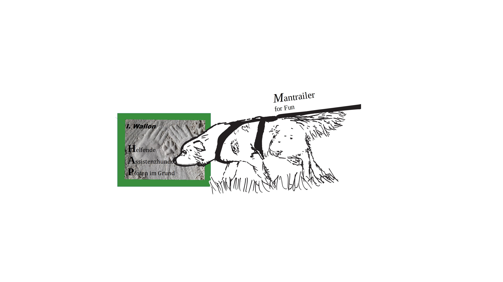

Beim Mantrailing hat der Hund die Aufgabe, eine bestimmte Person anhand ihres Individualgeruchs zu finden. Der Mensch und sein Hund sind stets ein Team. Der Mensch muss lernen, anhand der Körpersprache des Hundes zu erkennen, wann der Hund seine Spur (engl. "trail") verfolgt.
Ich baue Mantrailing mit Ihnen und Ihrem Hund kleinschrittig auf. Er lernt, selbstständig den Geruchsspuren zu folgen und sich durch Schwierigkeiten zu arbeiten. Untergrundwechsel, Wind, alte Spuren oder auch geruchliche Differenzierungen und die sich daraus ergebenden Herausforderungen sind nach und nach zu bewältigen.
Vorteile von Mantrailing
- Mantrailing ist eine gute Auslastungsmöglichkeit.
- Mensch und Hund arbeiten als Partner zusammen und stärken so ihre Bindung.
- Mantrailing fördert die Intelligenz Ihres Hundes. Hunde sind Wesen, deren Intellekt verkümmert, wenn er nicht gefordert wird.
Gönnen Sie sich und Ihrem Hund die einzigartige Möglichkeit, im Team zu lernen und Aufgaben zu bewältigen. Dabei lernen Sie, Ihren Hund zu lesen und Ihr Hund lernt, mit Ihnen zu kommunizieren.
Lernen Sie, Ihrem Hund zu vertrauen und gehen Sie neue Wege mit einem gemeinsamen Ziel!
Kursplan und Training
+++ Wochenend-Workshop ist in Arbeit! +++ Start ab März 2026 geplant
regelmässiges Training im Ebsdorfergrund geplant wenn mindestens 3-4 Mensch-Hunde-Teams angemeldet sind
Preise
Trainingsstunde an verschiedenen Orten
(mindestens 3-4 Mensch-Hunde-Teams)
Wochenendkurs Samstag bis Sonntagnachmittag
(mindestens 3-4 Mensch-Hund-Teams)
pro Team 25 €
pro Team 250 €
Interesse?
Melden Sie sich bei mir:
